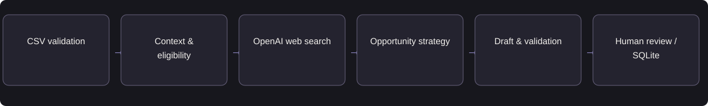

B2B SAAS / AGENTIC AI
YOYO Prospecting Agent
A local B2B prospecting prototype that connects account research, capability mapping, draft validation, and human review.
- Target user
- Sales development & account teams
- My role
- Independent product definition & AI workflow design
- Status
- Local prototype · offline-tested
- Period
- Prototype reviewed · October 2026
Separate verified account signals from role-based hypotheses. Hold unsupported claims and require human approval rather than allowing the workflow to send messages.
Available evidence: 69 focused offline checks passed · source-reviewed implementation
Independent prototype based on accessible local source. No employment, partnership, or endorsement by YOYO is implied. Offline checks use mocked provider responses; customer response and conversion outcomes have not been measured.
01Problem & opportunity
Sales teams must research an account, decide whether it is relevant, identify a supported business need, and write a credible first message. Manual research is inconsistent, while automated outreach can produce generic copy or unsupported claims. The product opportunity is to reduce research effort while preserving relevance, factual support, and reviewer control.
Customer objective
Help sales users prepare supported, relevant outreach with less manual research and a clear approval trail.
User needs
The sales representative needs a concise research brief and an editable draft. The sales manager needs consistent qualification and a review trail. Both need the product to distinguish a verified account signal from a role-based hypothesis.
02Discovery & product judgment
Why AI is appropriate
Web research collects account evidence. Specialist model calls select an outreach angle and draft a message from a bounded brief. Deterministic checks enforce identity, approved capabilities, evidence linkage, and review state. LangGraph coordinates the workflow and pauses for a human decision.
Alternative considered
Use a rules-based eligibility check and a fixed template when context is limited. Reserve model calls for research synthesis and account-specific drafting. Do not add model agents for exact validation or database updates.
Discovery and validation priorities
- Map the current account-research and message-review workflow with sales users.
- Compare generic drafting with evidence-led drafting on the same prospect set.
- Validate qualification criteria, reviewer workload, and acceptable research cost before testing outbound engagement.
Prioritize evidence quality, bounded claims, and review integrity before adding scoring, connectors, or outbound automation.
03Product requirements & MVP
MVP scope
CSV upload and validation; context normalization; capability eligibility; account research; opportunity strategy; outreach draft; deterministic validation; persistent Approve/Edit/Reject review.
Functional requirements
Retain evidence provenance; hold company/title conflicts; restrict product claims to approved wording; isolate prospect state; validate edited drafts; prevent duplicate review events.
Non-goals
LinkedIn login or scraping, direct Sales Navigator API integration, automatic sending, distributed deployment, and numerical ICP scoring.
Non-functional requirements
Define latency and total-task cost budgets, versioned configuration, access boundaries, failure recovery, and auditability before a pilot.
Prioritized capabilities
| Priority / state | Capability | Acceptance criterion |
|---|---|---|
| P0 · implemented | Validate prospect input | Missing required fields and conflicting company/title values hold the affected row. |
| P0 · implemented | Evidence-aware strategy | Signal-led drafting requires supported company evidence; role-led output must not invent account events. |
| P0 · implemented | Human approval | Approve, Edit, and Reject resume the correct thread; edited copy is revalidated. |
| P0 · implemented | Idempotent review | A repeated submission or review event does not create duplicate execution or decisions. |
| P1 · proposed | Numerical ICP scoring | Define transparent, reviewer-labeled eligibility criteria before adding a score and threshold. |
| P1 · proposed | Controlled outreach experiment | Record consented manual outreach outcomes with distinct-prospect denominators; synthetic rows remain excluded. |
Representative user story
As a sales development representative, I need to inspect supporting evidence and edit a prospect draft so I can approve relevant, defensible outreach.
MVP workflow walkthrough
The steps illustrate the implemented local workflow. They are not screenshots or live API calls.
Validate the prospect
The implemented workflow normalizes CSV fields and holds missing or conflicting identity data.
04Architecture & AI workflow

Verified implementation: Streamlit UI, Python validation, OpenAI Responses SDK with hosted web search, LangGraph state transitions and interrupts, and SQLite persistence. Tavily, Firecrawl, numerical ICP scoring, and automatic message sending are not implemented in this version.
| Trade-off | Product decision |
|---|---|
| Evidence-led vs. role-led drafting | Use verified company evidence when available. If research fails, permit a bounded role-led question or hold the prospect; never invent an account event. |
| Agent autonomy vs. reviewer control | Generate a draft, validate it, and pause for Approve, Edit, or Reject. No sending capability exists. |
| Flexible research vs. bounded cost | The normal path has three specialist model calls. Follow-up research and writer corrections are bounded; exact validation runs in Python. |
| Throughput vs. review integrity | Process prospects independently and persist identifiers. Resume the correct review thread and reject stale or mismatched records. |
Failure handling
Research failure → bounded role-led fallback or hold. Unsupported claims → correction, then hold if unresolved. Stale review state → suppress action controls and require a fresh record.
Observability & data boundaries
Persist run, prospect, thread, draft, and review identifiers. Keep private relationship signals and credentials out of model context. Log stage status, timing, and returned usage; do not infer missing token usage.
05Evaluation & guardrails
| Metric | Definition / measurement | Target or validation approach | Product relevance |
|---|---|---|---|
| Qualification precision | Reviewer-confirmed suitable prospects ÷ prospects marked eligible | Proposed pilot metric | Prevents research and review effort being spent on irrelevant accounts. |
| Evidence coverage | Draft factual claims linked to valid supporting evidence ÷ factual claims | Required before review | Protects against unsupported account and product assertions. |
| Draft approval / edit rate | Approved unchanged or edited drafts ÷ reviewed drafts | Track separately by strategy and reviewer | Shows whether the output reduces effort or merely shifts it to editing. |
| Positive reply rate | Prospects with a positive reply ÷ distinct prospects manually contacted | Future real-outreach pilot only | Tests whether relevance translates into qualified engagement. |
| Qualified meeting conversion | Qualified meetings ÷ distinct contacted prospects | Future real-outreach pilot only | Connects drafting quality with a commercial outcome. |
| Time per reviewed prospect | Research + drafting + review time per prospect | Compare with the manual baseline | Measures net productivity after human review. |
| Cost per reviewed prospect | Provider + search + operational cost ÷ reviewed prospects | Set budget after representative runs | Makes the workflow economically viable. |
| Opt-out / complaint rate | Opt-outs or complaints ÷ distinct contacted prospects | Pilot guardrail | Prevents engagement gains at the expense of recipient trust. |
Offline evaluation
Executed checks
A fresh focused run passed 69 tests across agent contracts, graph/review behavior, and product-claim validation. Provider responses were mocked; this is software regression evidence, not model-quality accuracy.
Dataset and boundaries
Tests use synthetic prospect fixtures, API-shaped doubles, temporary SQLite databases, and real LangGraph checkpoints. No real outreach was sent.
Release-blocking failures
Unsupported product expansion, wrong-prospect review, unlinked evidence, duplicate events, or synthetic contacts entering real outcome metrics.
Model-quality evaluation
Create a separate reviewer-labeled dataset for qualification and message relevance. Historical documents describe synthetic live smoke checks; no live API check was re-run for this portfolio update.
Online evaluation & experimentation
Reviewer workflow
Track unchanged approval, edits, rejection reasons, review time, and repeated use in a limited internal pilot.
Commercial experiment
Only after manual outreach is authorized, compare evidence-led and baseline messages with predeclared segmentation and sample-size requirements.
Correct denominators
Measure positive replies and qualified meetings per distinct manually contacted prospect; exclude synthetic rows.
Quality and trust
Audit factual support and generic or duplicate copy; track opt-outs, complaints, dependency failures, and cost.
Predeclare the primary outcome, guardrails, allocation unit, and sample-size requirement before an A/B test. Small usability studies provide directional feedback, not causal business uplift.
Representative evaluation cases
| Case | Scenario | Expected behavior | Severity |
|---|---|---|---|
| YOYO-01 | Conflicting company or title | Hold the prospect until the conflicting fields are resolved. | Critical |
| YOYO-02 | Unsupported performance claim | Request bounded correction; hold if the claim remains unsupported. | Critical |
| YOYO-03 | Repeated review submission | Apply the decision once to the correct persisted draft. | Material |
Require valid evidence boundaries, isolated prospect state, reliable review actions, and no unresolved critical regressions. Pilot approval also requires acceptable reviewer-labeled relevance, cost, and manual-review effort.
06Launch & iteration
Current state and release sequence
Current state: a local prototype with source-reviewed workflow and focused offline regression evidence. Proposed next steps: representative live-model evaluation, staff-only review pilot, then a controlled manual-outreach experiment. It is not a production SaaS deployment.
Operational readiness
Version models, prompts, tool contracts, and configuration. Assign product and engineering owners, test access permissions and dependency outages, and verify support and rollback before a pilot.
Rollback and escalation
Pause new jobs on provider or integrity failures. Preserve persisted drafts and review records. Return to manual research and drafting; do not automatically replay interrupted paid calls.
Next validation priority
Prioritize reviewer-labeled prospect suitability and draft relevance. Add numerical ICP scoring only after eligibility criteria are stable and validated.
07Outcomes & learning
Implemented CSV-to-human-review workflow with persistent state and bounded model/tool stages. A fresh run passed 69 focused offline tests. There is no measured reply-rate, meeting-conversion, or customer-efficiency improvement.
Product learning and next decision
Reliability depends on evidence boundaries and review-state integrity as much as message quality. The next product decision is whether the workflow saves reviewer time while improving qualified engagement.
08Supporting artifacts
Concise artifacts for reviewing the requirements, architecture, acceptance criteria, and evaluation approach. The verification summary separates fresh offline checks from historical live smoke documentation.